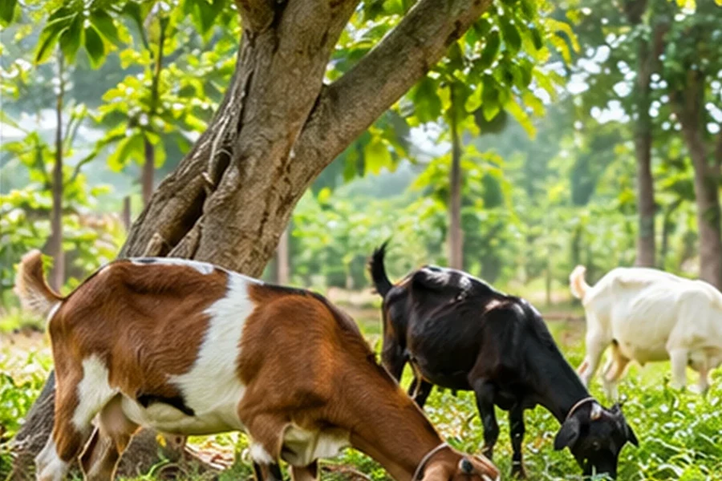

Products
Feed, fodder, dairy and farm supply enquiries.
A few helpful answers about products, support and getting started.
If you need more detail, send us a message and we’ll help direct your enquiry.
You can enquire about feed and fodder, livestock care essentials, dairy supplies and general farm operation products.
Share your animal type, farm setup and requirement. Our team can help you navigate the relevant category and product information.
No. This website is not a veterinary service. For diagnosis, treatment or urgent animal-health concerns, contact a qualified veterinarian.
Use the contact form or phone number to enquire about current product availability and details.
Yes. Include the product category, approximate quantity and your location in your enquiry.
Feed, fodder, dairy and farm supply enquiries.
General information and links to care categories.
Availability, repeat orders and follow-up enquiries.

FarmCare can help with general product enquiries. Diagnosis, treatment and urgent animal-health decisions should always be handled by a qualified veterinary professional.
Read livestock care notesSend us your question and include a little context about your farm or product requirement.
Send your questionTell us what you are trying to solve and we’ll help point you in the right direction.
Contact FarmCare